Давно фото не выкладывал — то по делам мотался, то некогда было, то апдейт сайта надо было доделать, т.к. там старые фото были, а новые логично в новый апдейт, но альманах надо было сверстать и выложить, да и лекции времени требовали...
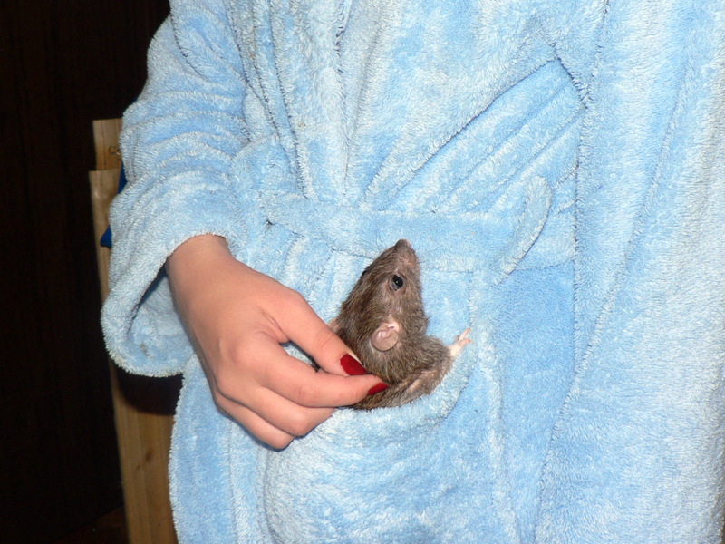
Это наш ветеран Терабайт, два года и пять месяцев.

Карманный крыс...
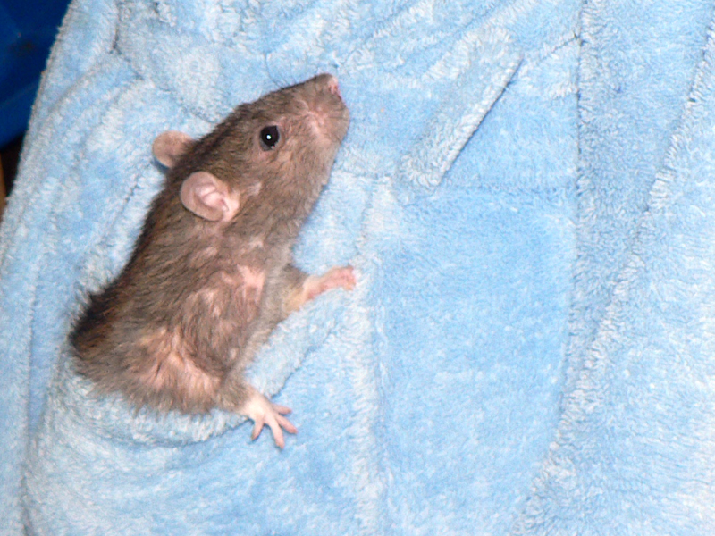
...но бойкий вполне.
После ухода Сентября мы взяли двух новых крысов, уже взрослых, и подселили к Терабайту, чтобы тому скучно не было.
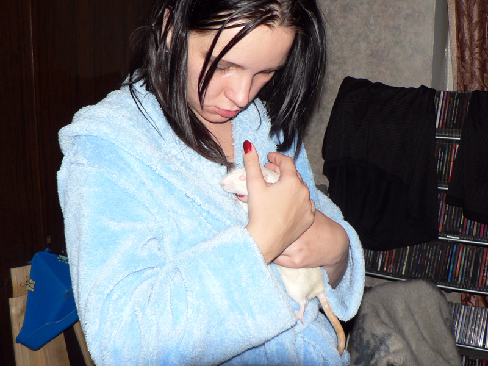
Это Снежок. Происхождение лабораторное. Первый альбино у нас.
Я хотел пафосно назвать, что-то типа "Профессор Снегг", но
сразу прилепилось "Снежок", и всё тут.
А чтобы у него лабораторная фамилия была, пусть будет Снежок
Фуркацин.
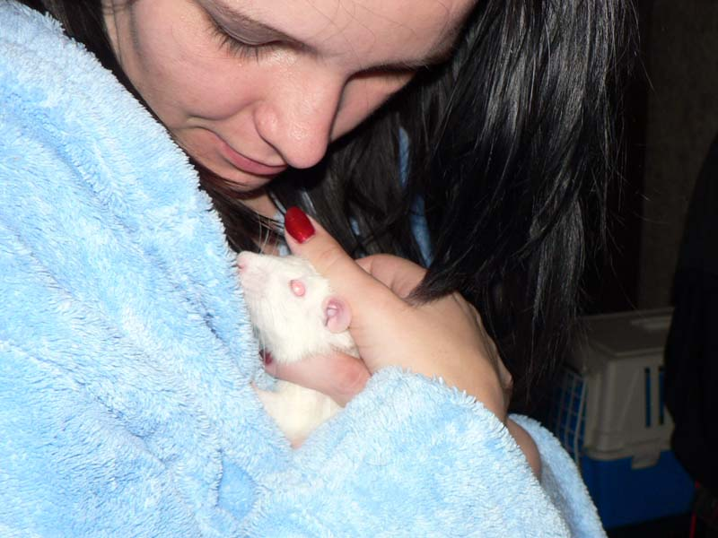
Сам на руки не идёт, но трогательный, если поймать.

Капюшон — место для посиделок.
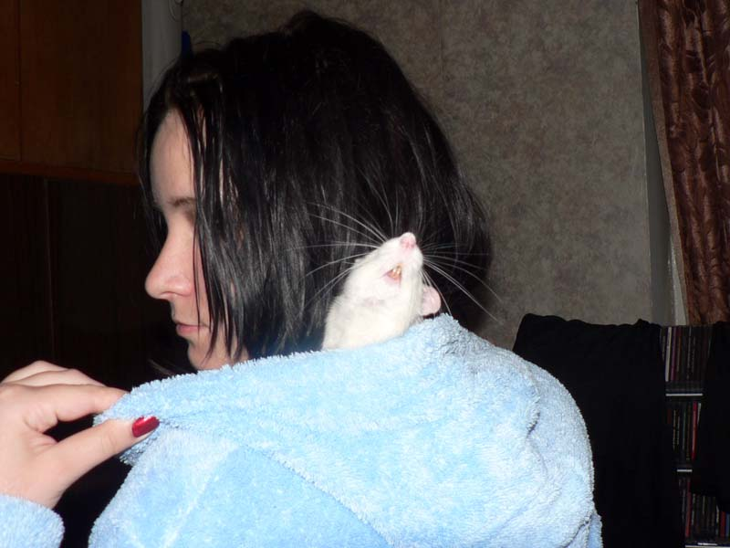
— Нет! Не хочу сидеть на чужой шее!

— Пойду гулять!
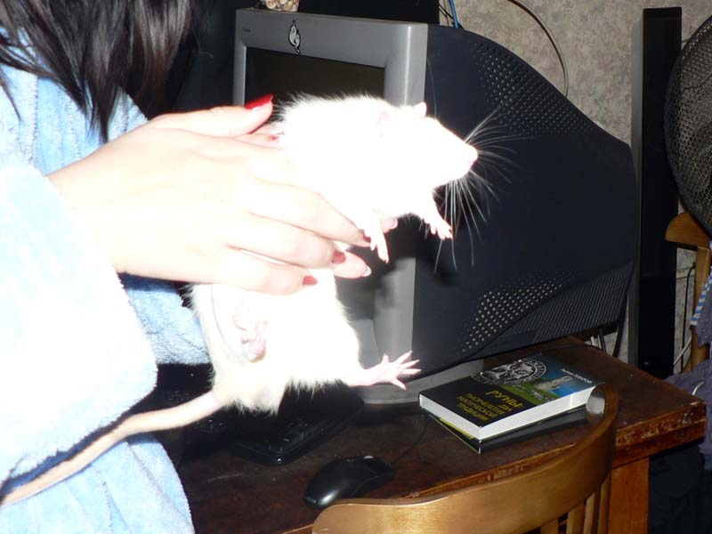
— Хозяева, вы что? Мыльницей, со вспышкой, в упор — кто так фотографирует?

Снежок на прогулке нашёл самое мягкое крысье место — запас чистых тряпочек.
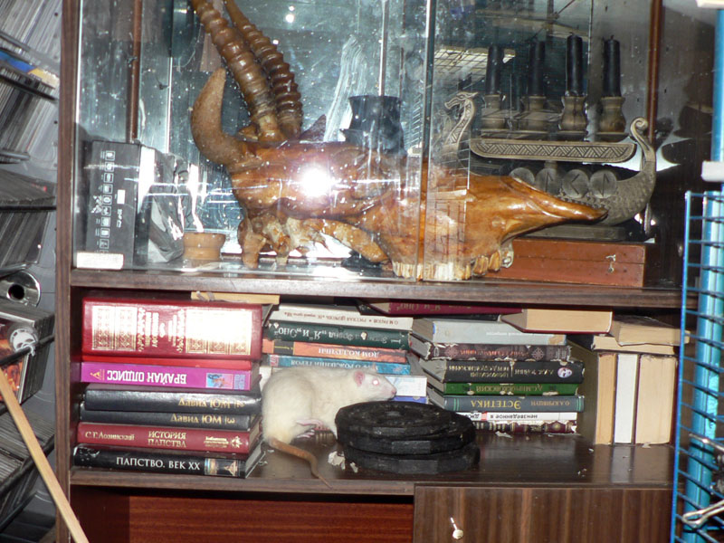
— Чего гантелю развинтил? А-а, цыпленка табака готовили, понятно.

— Терабайт, я гулять пошёл!
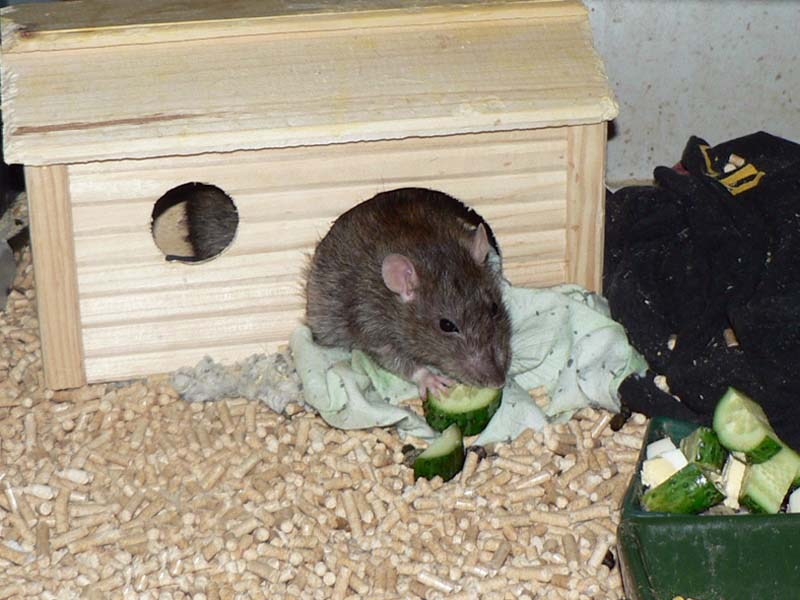
— Иди, не вопрос. Все огурцы мне достанутся.

— Сколько подушек! Это же за всю жизнь не перегрызть!
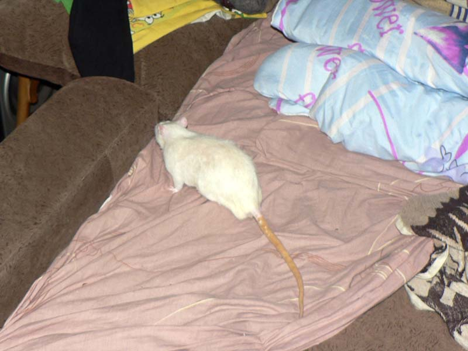
— Не, я ничего. я пойду, не надо на меня так смотеть.. что я такого сказал-то?

После уборки, Терабайт со Снежком хором:
— Хозяева, вы чё? Мы тут неделю клетку обсирали, а вы! Нам теперь заново всё
делать, довольны, да?

Второй новенький. Думали, как назвать, решили так:
1. Он появился сразу после Сентября, и тоже black self rex;
т.е. такой же и следующий — пусть будет Октябрь тогда.
2. Фамилию-то надо, а с Октябрём что сочетается?
Вот и назвали — Октябрь Семнадцатого.
Происхождение: спасен из статуса "корм".

Бойкий такой, любознательный, фиг отловишь.

Всё время стремится на свободу под шкаф и подговаривает верхних заключённых устроить революцию.
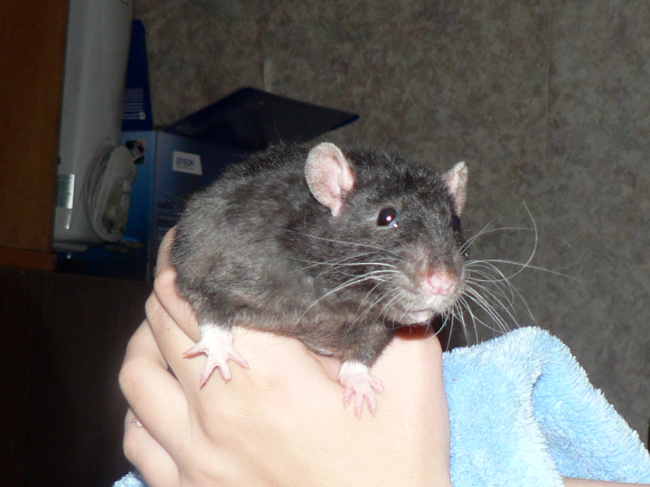
И глаза честные-честные.
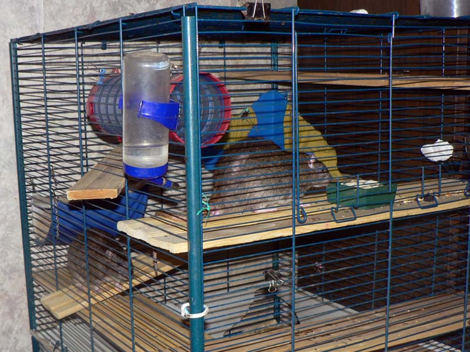
Дюк Нюкем (сверху, наглый) и Джон Ди (сзади, ныкательный) в своей клетке.
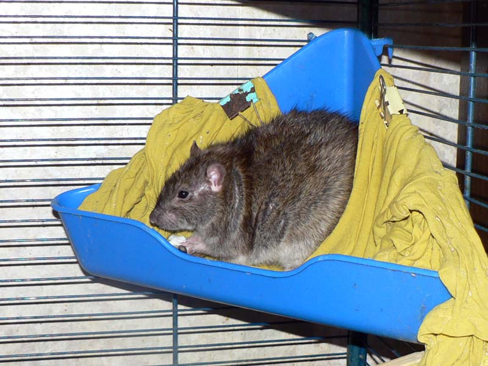
Дюк Нюкем только что взял их рук дропсину!
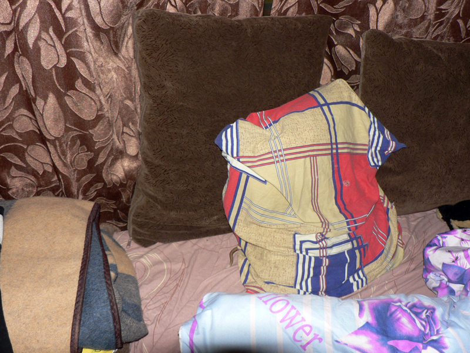
Загадка: найдите крыса на фото.
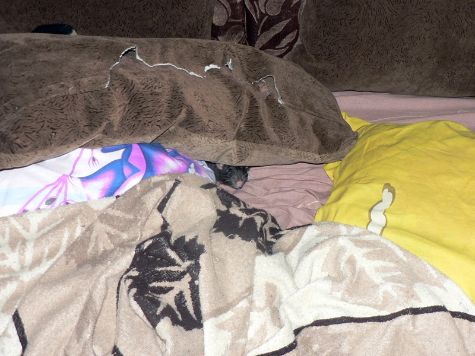
Октябрь: — Да вон же я! Правда, уже с другой стороны вылез.